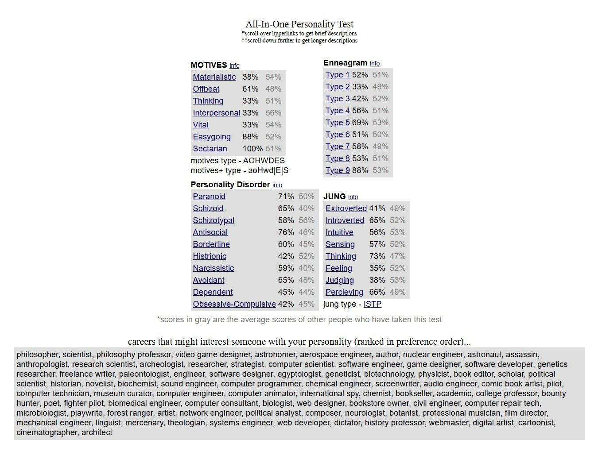

Hobbies & Interests
I enjoy a variety of activities that keep me both mentally and physically active. Here are a few of my favorite hobbies:
- Reading about new cybersecurity trends and hacking techniques.
- Playing video games to unwind.
- Experimenting with different programming languages for fun.
- I play football occasionally.
Fun Facts
Some interesting things about me that you might not know:
- I've built several personal projects, including a basic internal file server for working with virtual machines.
- I'm always the go-to person for troubleshooting tech issues within my circle of friends!
- My favorite hobby is playing games and debating religion and philosophy.
About Me
I'm a University student with a passion for cybersecurity. I love learning about history, war, and geopolitics. My hobbies include studying various aspects of computer security and exploring different historical events.
Impact on Academic Life
My strongest trait is curiosity, which drives me to explore and learn new things. This curiosity, along with my interest in cybersecurity, impacts my academic life. I work on personal projects that enhance my skills in the field. This helps me to have a better understanding of the industry, which in turn helps positively in academics. My interest in history and geopolitics broadens my perspective, allowing me to approach certain problems analytically.
Hero and Personal Motto
Hero: General Norman Schwarzkopf
Why?: General Norman Schwarzkopf, also known as "Stormin' Norman," was a highly respected U.S. Army general who led the coalition forces during Operation Desert Storm. His strategic leadership and decision making made him a great figure. Schwarzkopf's ability to coordinate and lead a multinational force in a difficult conflict made him a respectable military general.
Favorite Quote: "The truth of the matter is that you always know the right thing to do. The hard part is doing it." – General Norman Schwarzkopf
Personal Motto: "The most important thing is to keep going until there is nothing left to do" - Bryan Jones.
My Personality Test Result
I took the All-In-One Personality Test on SimilarMinds, which showed that I’m primarily introverted (65%) and logical (73%), favoring reason over emotions in decision-making. The test also identified me as an ISTP (Introverted, Sensing, Thinking, Perceiving), meaning I prefer independent, hands-on problem-solving. I scored highest in being easygoing (88%) and sectarian (100%), suggesting I value personal freedom but stay true to my beliefs.
The Enneagram labeled me as Type 5 (Investigator, 69%), highlighting my love for deep knowledge. I find the test valid for understanding my traits, though it doesn’t capture all aspects of who I am.
Overall, I think the test has validity in providing a broad overview of my personality and tendencies. It helped me recognize some aspects of myself that I may not always see on the surface, but I also believe that the test is just a starting point and doesn't fully capture the complexity of my individual character.